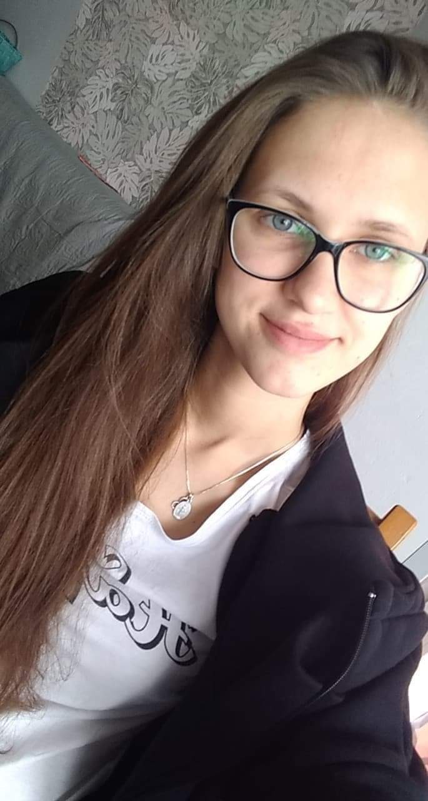

Nazywam się Magdalena Jurkowska, 11 lipca skończę 21 lat i jestem studentką na drugim roku Politechniki Wrocławskiej na kierunku informatyka algorytmiczna. Na te studia trafiłam po części przypadkowo, ale jestem z nich bardzo zadowolona i widzę się w przyszłości w zawodzie związanym z informatyką. Moje zainteresowania związane z kierunkiem studiów to przede wszystkim język bazodanowy - SQL, Hybernate oraz Java.
Jeśli chodzi o zainteresowania poza studiami to są to przede wszystkim szachy oraz inne dyscypliny sportu. Lubię też czytać książki i słuchać muzyki.
